A single entry point for continuous/numeric variable plotting with
violin, box, bar (mean +/- SD), and dot plot types. Supports statistical
comparisons via ggpubr, overlay layers (boxplot, jitter points,
trend lines), and the same split/group/bg patterns as
plt_cat.
Usage
plt_con(
data,
stat.by,
group.by = NULL,
split.by = NULL,
bg.by = NULL,
type = c("violin", "box", "bar", "dot"),
fill.by = c("group", "feature"),
palette = NULL,
alpha = 0.8,
add_box = FALSE,
box_color = "black",
box_width = 0.1,
add_point = FALSE,
pt.color = "grey30",
pt.size = NULL,
pt.alpha = 1,
jitter.width = 0.4,
jitter.height = 0.1,
add_trend = FALSE,
trend_color = "black",
trend_linewidth = 1,
trend_ptsize = 2,
comparisons = NULL,
ref_group = NULL,
pairwise_method = "wilcox.test",
multiplegroup_comparisons = FALSE,
multiple_method = "kruskal.test",
sig_label = c("p.signif", "p.format"),
sig_labelsize = 3.5,
same.y.lims = FALSE,
y.min = NULL,
y.max = NULL,
y.nbreaks = 5,
sort = FALSE,
stack = FALSE,
flip = FALSE,
title = NULL,
subtitle = NULL,
xlab = NULL,
ylab = NULL,
legend.position = "right",
legend.direction = "vertical",
aspect.ratio = NULL,
base_size = 14,
bg_palette = NULL,
bg_alpha = 0.15,
facet_nrow = NULL,
facet_ncol = NULL,
combine = TRUE,
force = FALSE,
seed = 11
)Arguments
- data
A data frame.
- stat.by
Character vector. Column name(s) of numeric variables to plot.
- group.by
Character. Column name for the x-axis grouping variable. Default
NULL(all data in one group).- split.by
Character. Optional splitting variable. Splits data, creates one plot per level, and combines with patchwork.
- bg.by
Character. Column name for background colour bands. Must be a superset of
group.by. DefaultNULL.- type
Plot type:
"violin"(default),"box","bar", or"dot".- fill.by
What variable to map to fill colour:
"group"(default) colours by group.by levels;"feature"colours by stat.by name.- palette
Colour palette. One of:
NULL(default): usespal_lancet.A single string matching a name in
palette_list: usespal_get().A character vector of colours: used directly.
- alpha
Numeric 0–1. Fill transparency. Default 0.8.
- add_box
Logical. Overlay boxplot on violin? Default
FALSE.- box_color
Character. Box overlay colour. Default
"black".- box_width
Numeric. Box overlay width. Default 0.1.
- add_point
Logical. Overlay jittered points? Default
FALSE.- pt.color
Character. Point colour. Default
"grey30".- pt.size
Numeric. Point size. Default
NULL(auto).- pt.alpha
Numeric. Point transparency. Default 1.
- jitter.width
Numeric. Jitter width. Default 0.4.
- jitter.height
Numeric. Jitter height. Default 0.1.
- add_trend
Logical. Overlay trend line connecting medians/means? Default
FALSE.- trend_color
Character. Trend line colour. Default
"black".- trend_linewidth
Numeric. Trend line width. Default 1.
- trend_ptsize
Numeric. Trend point size. Default 2.
- comparisons
A list of length-2 character vectors for pairwise tests. Default
NULL.- ref_group
Character. Reference group for comparisons. Default
NULL.- pairwise_method
Character. Pairwise test method. Default
"wilcox.test".- multiplegroup_comparisons
Logical. Add global comparison? Default
FALSE.- multiple_method
Character. Global test method. Default
"kruskal.test".- sig_label
Label type:
"p.signif"or"p.format".- sig_labelsize
Numeric. Label text size. Default 3.5.
- same.y.lims
Logical. Use same y limits across features? Default
FALSE.- y.min
Numeric or character. Minimum y-axis limit. Character
"qN"uses the Nth percentile. DefaultNULL.- y.max
Numeric or character. Maximum y-axis limit. Character
"qN"uses the Nth percentile. DefaultNULL.- y.nbreaks
Integer. Number of y-axis breaks. Default 5.
- sort
Logical or character. Sort groups by median?
TRUEor"decreasing"for descending,"increasing"for ascending. DefaultFALSE.- stack
Logical. Stack features vertically using facet? Default
FALSE.- flip
Logical. Flip coordinates? Default
FALSE.- title
Character. Plot title. Default
NULL.- subtitle
Character. Plot subtitle. Default
NULL.- xlab
Character. X-axis label. Default
NULL.- ylab
Character. Y-axis label. Default
NULL.- legend.position
Legend position. Default
"right".- legend.direction
Legend direction. Default
"vertical".- aspect.ratio
Numeric. Panel aspect ratio. Default
NULL.- base_size
Numeric. Base font size for
theme_my(). Default 14.- bg_palette
Character vector. Background band colours. Default
NULL.- bg_alpha
Numeric. Background band transparency. Default 0.15.
- facet_nrow
Integer. Rows when combining panels. Default
NULL.- facet_ncol
Integer. Columns when combining panels. Default
NULL.- combine
Logical.
TRUEreturns single patchwork,FALSEreturns list. DefaultTRUE.- force
Logical. Override >100 level safety? Default
FALSE.- seed
Integer. Random seed for jitter. Default 11.
See also
Other plot:
plt_cat(),
plt_cohen(),
plt_dist(),
plt_radar(),
plt_sankey(),
plt_upset()
Examples
set.seed(1)
grp <- factor(sample(c("A", "B", "C"), 200, TRUE))
df <- data.frame(
value1 = rnorm(200),
value2 = rnorm(200, mean = 2),
group = grp,
batch = factor(sample(c("B1", "B2"), 200, TRUE)),
region = factor(ifelse(grp == "C", "R2", "R1"))
)
# Basic violin plot
plt_con(df, "value1", "group")
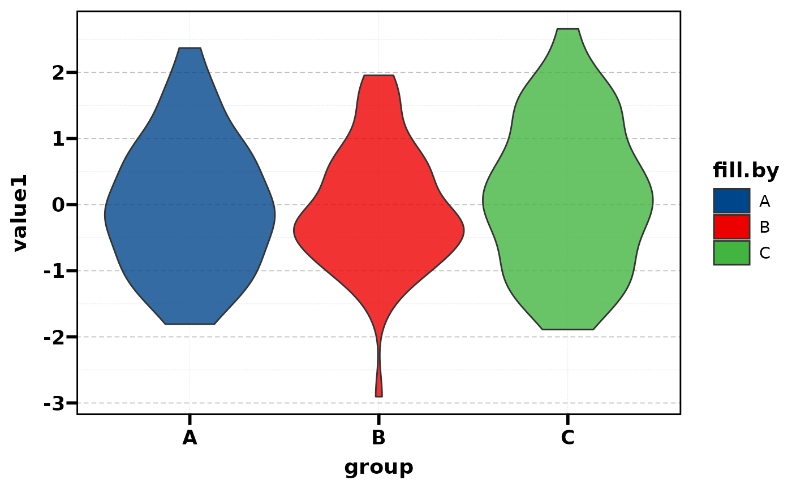
# \donttest{
# ===== Basic types =====
plt_con(df, "value1", "group", type = "box")
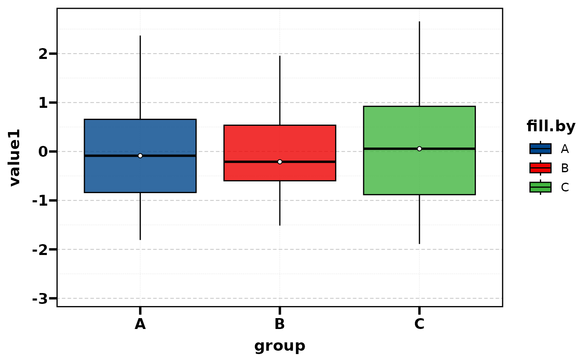
plt_con(df, "value1", "group", type = "bar")
#> Warning: Computation failed in `stat_summary()`.
#> Caused by error in `fun.data()`:
#> ! The package "Hmisc" is required.
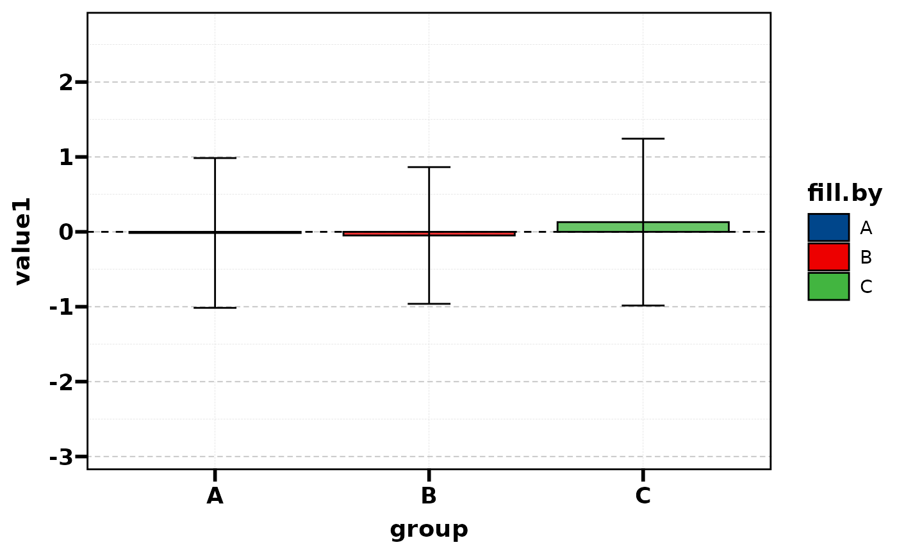
plt_con(df, "value1", "group", type = "dot")
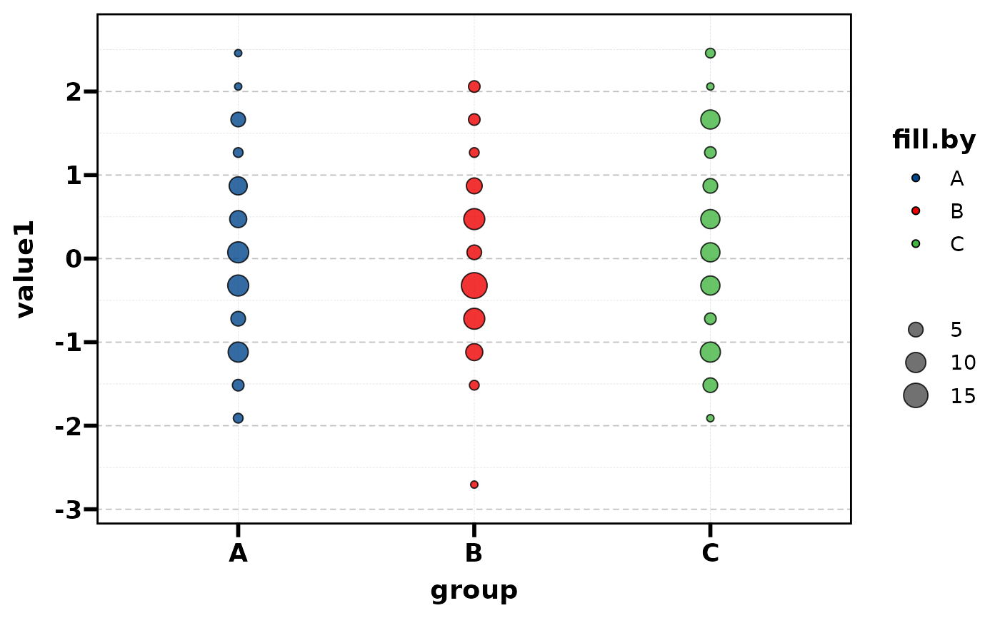
# ===== Overlays =====
plt_con(df, "value1", "group", add_box = TRUE)
plt_con(df, "value1", "group", type = "box", add_point = TRUE)
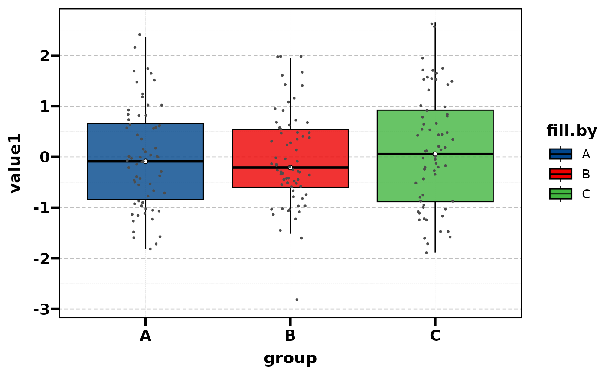
plt_con(df, "value1", "group", type = "bar", add_trend = TRUE)
#> Warning: Computation failed in `stat_summary()`.
#> Caused by error in `fun.data()`:
#> ! The package "Hmisc" is required.
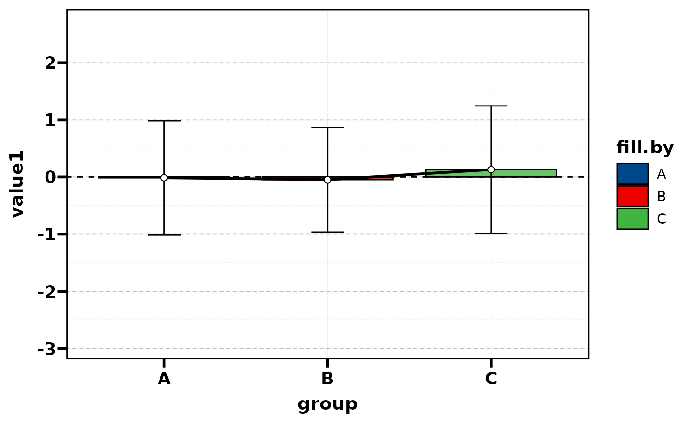
plt_con(df, "value1", "group", add_point = TRUE, add_box = TRUE)
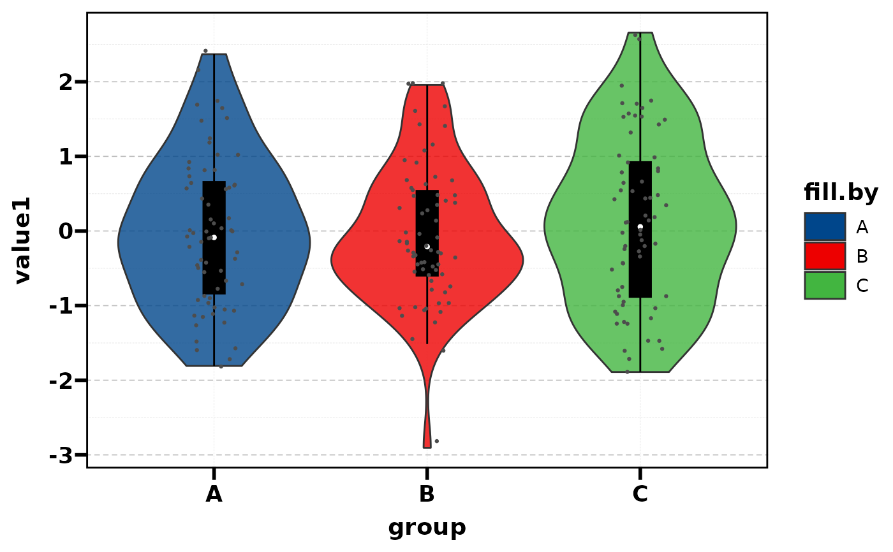
# ===== Multiple features =====
plt_con(df, c("value1", "value2"), "group")
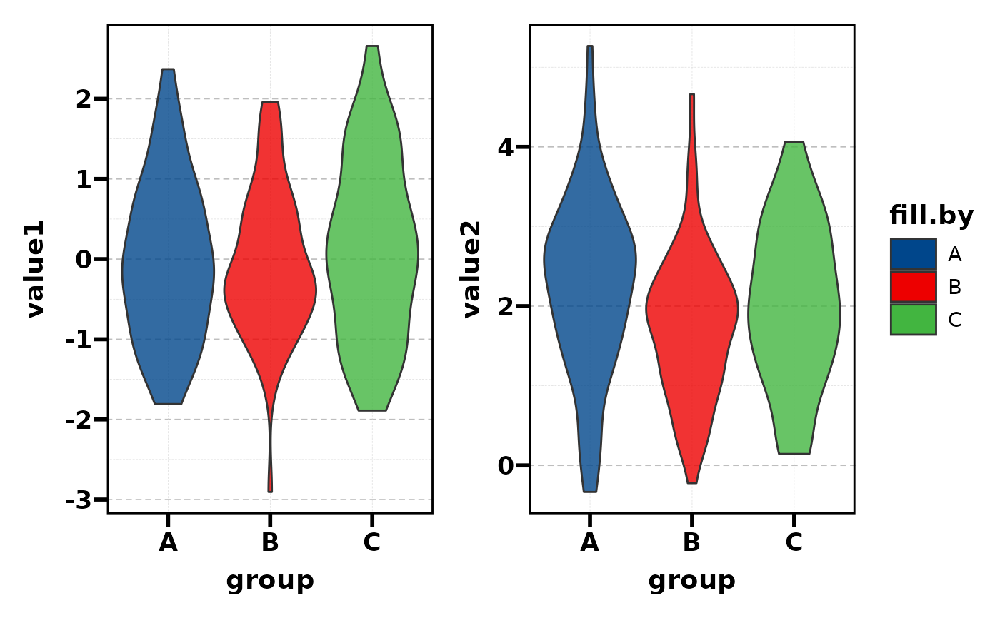
plt_con(df, c("value1", "value2"), "group", stack = TRUE)
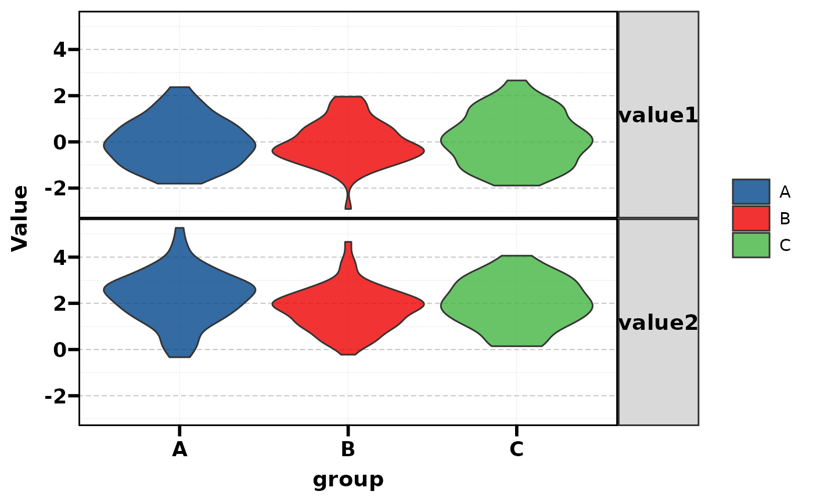
plt_con(df, c("value1", "value2"), "group", fill.by = "feature")
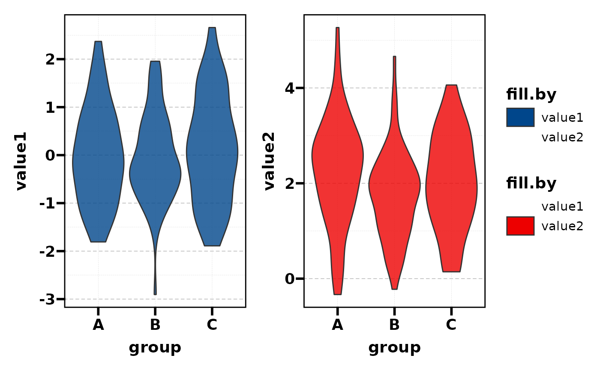
# ===== Statistical comparisons =====
plt_con(df, "value1", "group",
comparisons = list(c("A", "B"), c("A", "C")))
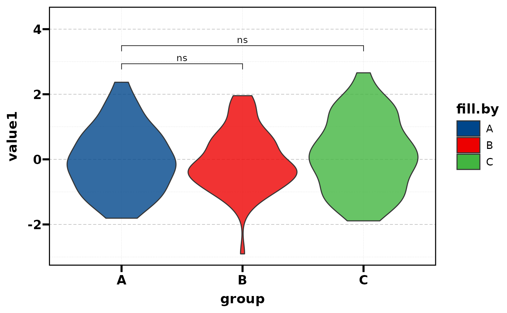
plt_con(df, "value1", "group",
multiplegroup_comparisons = TRUE, sig_label = "p.format")
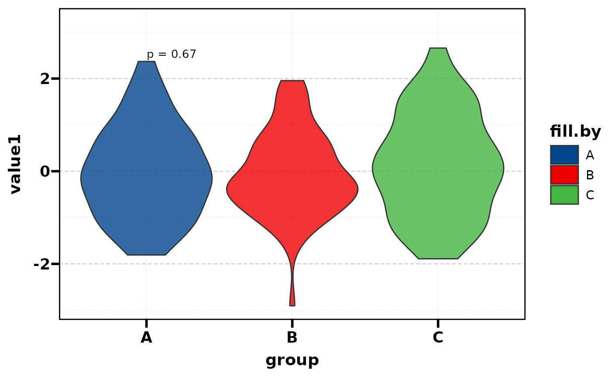
# ===== Layout =====
plt_con(df, "value1", "group", flip = TRUE)
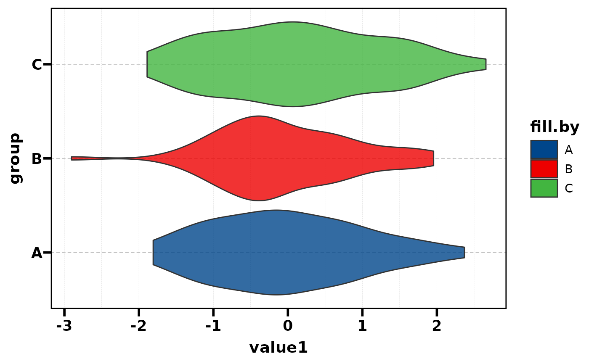
plt_con(df, "value1", "group", split.by = "batch")
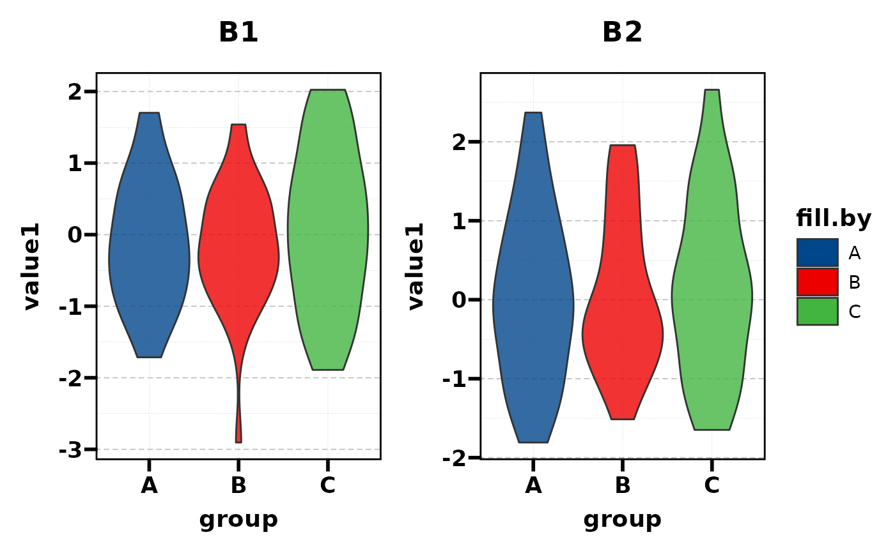
plt_con(df, "value1", "group", bg.by = "region")
plt_con(df, "value1", "group", sort = TRUE)
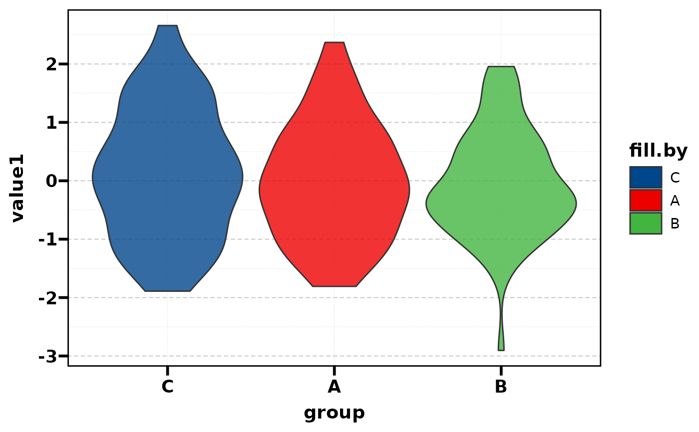
# ===== Y-axis control =====
plt_con(df, c("value1", "value2"), "group",
same.y.lims = TRUE, y.max = 4)
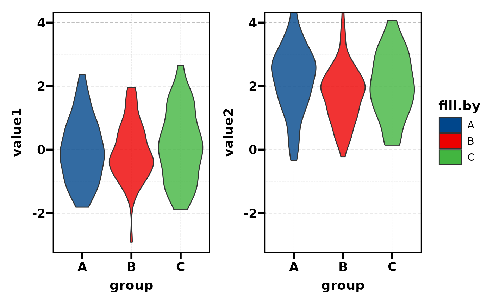
# }